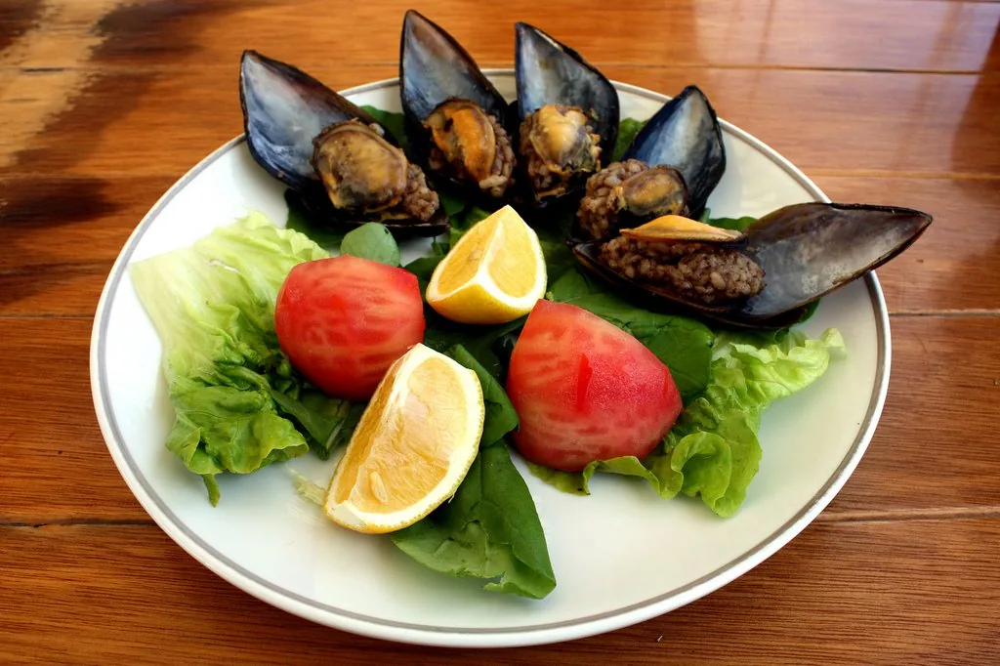
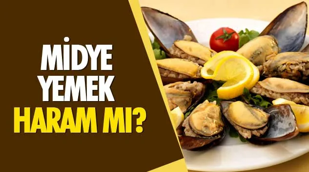

Die Speiseregeln im Koran gegen die Speiseregeln in der Religion der Rechtsschulen und Hadithen
In diesem Abschnitt werden wir das Thema Essen behandeln und die Unterschiede zwischen dem Islam, wie er im Koran beschrieben wird, und der Religion der Rechtsschulen aufzeigen. Der Koran listet die verbotenen Speisen sehr klar und deutlich auf:

Muscheln und Garnelen als verboten (haram) erklärt
Wie wir in den obigen Versen sehen, fasst der Koran die Speisen, deren Verzehr verboten ist, in vier Punkten zusammen:
Er betont, dass nur diese Dinge verboten sind. Es wird sogar detailliert angegeben, dass jemand, der sich in einer unumgänglichen Notlage befindet und außer diesen vier nichts zu essen finden kann, diese Speisen unter der Bedingung verzehren darf, dass er das Maß nicht überschreitet. Fragt man Menschen in unserem Umfeld nach einer solchen Situation, so wird es kaum jemanden geben, der eine solche Notlage erlebt hat (und wenn, dann vielleicht nur einmal im Leben). Das Thema ist vom Koran also in größter Detailtiefe erklärt worden. Dennoch sehen wir, dass die Rechtsschulen dem Glauben weitere Verbote hinzugefügt haben, die im Koran nicht erwähnt werden.
Zum Beispiel gilt es im hanafitischen Recht als haram (verboten), Muscheln und Garnelen zu essen. Leider betrachten viele Menschen diese Auslegung als islamisches Gebot und erklären sich damit diese von Gott geschaffenen Gaben selbst verboten (haram). Die Rechtsschulen haben sich in der Frage der verbotenen Speisen nicht nur mit dem Koran widersprochen, sondern auch untereinander. So betrachtet die malikitische Rechtsschule Muscheln und Garnelen, die von den Hanafiten als verboten (haram) angesehen werden, als erlaubt (halal). Pferdefleisch, das die Malikiten für verboten halten, ist in Rechtsschulen wie der schafiitischen und hanbalitischen wiederum erlaubt. Die zusätzlichen Verbote der Rechtsschulen hören damit nicht auf. Fleisch von Raubtieren wie Wölfen, Bären, Hunden, Eichhörnchen und Füchsen wird ebenfalls auf die Liste der verbotenen Speisen gesetzt. Fleisch von Greifvögeln, die mit ihren Krallen Beute erlegen, wird ebenfalls von den Rechtsschulen als verboten (haram) eingestuft. Schlangen, Frösche, Schildkröten und Krabben gehören ebenfalls zur „Verbotenen(haram)-Liste“ mancher Rechtsschulen. Diejenigen, die die Erklärungen des Korans als nicht ausreichend betrachten, haben mithilfe erfundener Hadithe das, was in ihrer eigenen Kultur als unschön betrachtet wurde, als haram deklariert. Dabei variiert die Esskultur zwischen unterschiedlichen Kulturen stark. So werden Froschfleisch und Pferdefleisch in einigen Kulturen überhaupt nicht gegessen, während sie in anderen als Delikatesse gelten. In vielen Kulturen ist es ebenfalls üblich, Fleisch von Tieren wie Bären, Löwen und Wölfen zu verzehren. Solche unnötigen und unsinnigen Ergänzungen, die durch kulturelle Prägungen entstehen, haben in vielen verschiedenen Kulturen unnötige Härten mit sich gebracht. In Ländern, die von Meeren umgeben sind, wird das Verbot von Muscheln und Garnelen unter anderem Schwierigkeiten für die Gläubigen verursachen. Wären Muscheln und Garnelen verboten (haram), würde Gott, der sogar unwahrscheinliche Fälle detailliert erklärt, diese Lebensmittel, mit denen Millionen Menschen konfrontiert sind, nicht ausdrücklich verbieten? Da er sie nicht verboten hat, wollte er sie offensichtlich auch nicht verbieten. Alles, was Gott nicht als verboten (haram) erklärt hat, ist erlaubt (halal) und somit genießbar.

Wie in den obigen Versen deutlich wird, ist es keine Frömmigkeit oder Gottesfurcht, Muscheln, Garnelen oder Pferdefleisch als verboten (haram) zu erklären. Vielmehr ist es eine Verleumdung Gottes, ein Verrat an dem Islam und führt dazu, dass Menschen sich von dem Islam abwenden. Im Koranvers 5:87 wird ausdrücklich erklärt, dass es eine Überschreitung ist, die von Gott als erlaubt erklärten guten Dinge für verboten (haram) zu erklären. Dass dieser Vers mit „Oh ihr Gläubigen“ beginnt, zeigt, dass diese Überschreitung auch von denen begangen wird, die von sich sagen, sie seien Muslime. Daher können wir nicht sagen: „Was macht es schon aus, wenn ein paar zusätzliche Dinge wie Muscheln und Garnelen verboten (haram) sind?“ Zusätzliche Härten in den Islam einzuführen, bedeutet Überschreitung, Irregehen und Auflehnung gegen Gottes Gebote und hat nichts mit Frömmigkeit zu tun.
Reis mit drei Fingern essen
Bis hierhin haben wir gesehen, wie zusätzliche Verbot (haram)- Regelungen in den Islam eingeführt wurden, die den Speisevorschriften des Korans fremd sind. Neben diesen Ergänzungen gibt es jedoch noch hunderte von Vorschriften über Essgewohnheiten und Menüs, die unter dem Titel „Sunna“ in den Islam eingebracht wurden. Jedem Element, das nicht im Koran vorkommt, selbst wenn es nur eine kleine Praxis ist, eine religiöse Bedeutung zuzumessen, ist nicht akzeptabel. Laut den erfundenen Hinzufügungen unter dem Titel „Sunna“ sollte man beim Essen Folgendes beachten:
Das Essen sollte auf dem Boden eingenommen werden. Unabhängig davon, ob es sich um Reis oder Fleisch handelt, sollten alle Speisen mit drei Fingern gegessen werden. Gabeln und Löffel werden nicht verwendet. Auf dem Boden sitzend sollte das rechte Bein aufgestellt und das linke unter den Körper geklemmt werden. Es wird besonderer Wert darauf gelegt, mit der rechten Hand zu essen. Es wird geglaubt, dass alles, was mit der linken Hand gegessen wird, vom Satan verzehrt wird. Huhn, Lamm, Rindfleisch, Kürbis und Auberginen gelten als „Sunna“. Da in der Zeit des Propheten der amerikanische Kontinent noch nicht entdeckt war, sind Kartoffeln, Tomaten oder Mais nicht Teil der „Sunna“. Das bedeutet, dass jemand, der Kürbis isst, eine Belohnung erhält, während jemand, der in derselben Mahlzeit Kartoffeln isst, diese Belohnung verpasst. Es wird auch betont, dass man Wasser in drei Schlucken trinken und eine Mahlzeit in 21 Bissen beenden sollte. Wer Wasser in vier Schlucken trinkt, wird gemäß dieser Logik nicht mit der Belohnung gesegnet. Es wird behauptet, dass es „Sunna“ sei, Speisen aus einer gemeinsamen Schüssel in der Mitte zu essen. Allerdings erklärt der Koran im Vers 24:61, dass es keinen Unterschied macht, ob man gemeinsam oder getrennt isst. Dennoch wird in der Herangehensweise der Rechtsschulen die Belohnung oft für gemeinsames Essen aus der Schüssel in der Mitte vorgesehen. Besonders im Ramadan wird häufig der Glaube verbreitet, dass das Fastenbrechen mit einer Olive oder Dattel als „Sunna“ gilt und besonders belohnt wird. Nach diesem Glauben erhält jemand, der sein Fasten mit Käse oder Suppe bricht, nicht dieselbe Belohnung wie jemand, der mit Oliven oder Datteln beginnt. Nach der Mahlzeit gelten das Ablecken der Finger und die Reihenfolge, in der man sie ableckt, in der „Sunna“-Interpretation der Rechtsschulen als geregelt; auch das Ablecken der Finger eines anderen wird als eine Möglichkeit zur Belohnung betrachtet. Die Liste der Essgewohnheiten könnte noch erweitert werden. Die Herangehensweise, die den Koran nicht als ausreichend betrachtet, hat den Islam mit zahllosen Details überladen.
Der Unterschied zwischen einem Muslim, der den Islam aus dem Koran versteht, und einem, der sie aus den Rechtsschulen begreift, zeigt sich sogar am Esstisch. Wie wir sehen, gibt es laut den Erklärungen des Korans nur vier verbotene Speisen, während die Rechtsschulen in ihrer Interpretation des Islam dutzende von verbotenen Speisen auflisten, die sich je nach Rechtsschule unterscheiden. Für einen Muslim, der den Islam aus dem Koran versteht, ist das Wichtigste beim Essen, dass die Speise nicht verboten (haram) ist, dass man Gott dankt und sich bewusst ist, dass Gott derjenige ist, der den Lebensunterhalt bereitstellt. Für einen Muslim, der den Islam aus dem Koran versteht, haben die unter dem Titel „Sunna“ präsentierten Essgewohnheiten keinen Bezug zum Islam. Diese Essgewohnheiten aus den Traditionen und Bräuchen der Araber könnten sowohl die Essgewohnheiten des Propheten als auch die der Götzendiener jener Zeit gewesen sein. Ob man mit Gabel, Löffel, Stäbchen oder mit den Händen isst, hat nichts mit der Nähe zu Gott oder mit Frömmigkeit zu tun, sondern lediglich mit Bräuchen und Traditionen. Doch diejenigen, die den arabisch geprägten, rechtsschulischen Islam annehmen, statt den Islam des Korans, haben die Essgewohnheiten aller Araber, ob Götzendiener oder Muslime, sogar die Menüs, unter dem Titel „Sunna“ anderen Menschen aufgezwungen. Leider hat man diesen Unsinn so stark verinnerlicht, dass manche Türken, Deutsche, Afghanen oder Engländer in ihrer arabischen Orientierung sogar arabischer als die Araber selbst geworden sind. Sie sehen dies jedoch als die Umsetzung der „Sunna“ an.